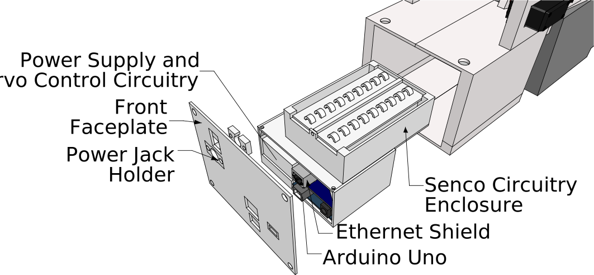

NAFSTR¶
Note: The documentation below is sparse and needs to be improved. Have fun!
Design¶
Here is an image showing the main parts of the robot:

Here is an exploded view of the robot, which is helpful for assembly:

Here is an image showing how the finger attaches to the servo and how the fingerprint attaches to the finger:

Here is an image showing how the robot rests on the fingerprint scanner:
Here is a final image showing how the electronics housing is assembled:
Construction¶
To construct the robot, first print appropriate quantities of the parts in Final STL Files/NAFSTR. Then, attach all the parts together and insert all the electronics. Here is a parts list of all the required parts that are not 3D printed:
Electronics¶
To assemble to electronics, look at the Fritzing file located at: Circuit/NAFSTRCircuit.fzz.